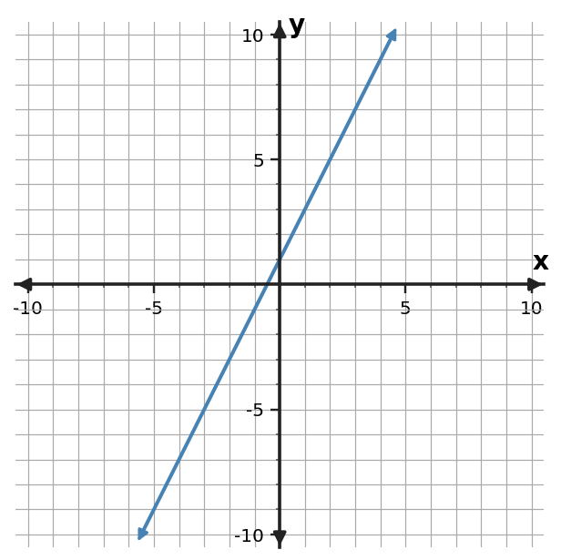
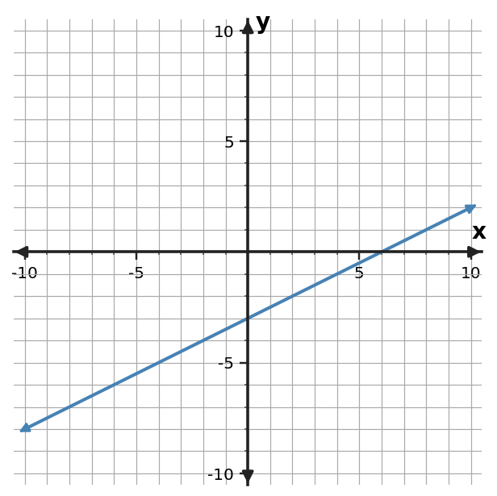
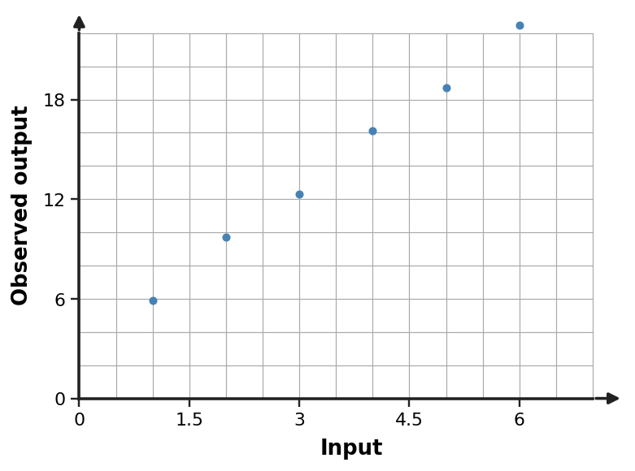

1
Use the graph to identify the $y$-intercept, one additional lattice point, and whether the line is increasing or decreasing. Explain how the axis scale supports your reading.

Show your reasoning and work clearly. Use labels, graph scales, and units when they are part of the mathematics. Complete all eight questions.
Use the graph to identify the $y$-intercept, one additional lattice point, and whether the line is increasing or decreasing. Explain how the axis scale supports your reading.

Use the table to determine the constant rate of change and starting value. Write an equation and explain how those two features appear in the table.
| $x$ | $y$ |
|---|---|
| 0 | 4 |
| 2 | 8 |
| 4 | 12 |
Write a symbolic rule for the pattern in the table, then use your rule to predict the output when $x=7$.
| Input $x$ | Output $y$ |
|---|---|
| $0$ | $2$ |
| $2$ | $8$ |
| $5$ | $17$ |
Relationship A is $y=2x+4$. Relationship B is shown in the table. Compare their rates and starting values, then determine which relationship has the greater output at $x=5$.
| B input | B output |
|---|---|
| 0 | 0 |
| 2 | 6 |
| 4 | 12 |
Create a coordinate graph of $y=-2x+4$. Label the intercept and one additional point that demonstrates the slope. Then state what each coordinate of that second point means mathematically.
A quantity starts at 20 units when $x=0$ and increases by 5 units for each increase of 1 in $x$. Write a linear equation, predict the value at $x=6$, and interpret the slope in words.
A pattern begins with 5 at input 0 and changes by 4 for each increase of 1 in the input. Build a four-row input-output table for inputs 0 through 3, write a rule, and give the ordered pair for input 6.
Two linear graphs are drawn in different windows. Graph A looks steeper, but its vertical axis counts by 20 while Graph B counts by 2. A student claims A must have the greater slope. Critique the claim and state what numerical evidence would settle the comparison.
Show your reasoning and work clearly. Use labels, graph scales, and units when they are part of the mathematics. Complete all eight questions.
A quantity starts at 80 units when $x=0$ and decreases by 3 units for each increase of 1 in $x$. Write a linear equation, predict the value at $x=6$, and interpret the slope in words.
Create a coordinate graph of $y=x-3$. Label the intercept and one additional point that demonstrates the slope. Then state what each coordinate of that second point means mathematically.
Relationship A is $y=2x+4$. Relationship B is shown in the table. Compare their rates and starting values, then determine which relationship has the greater output at $x=5$.
| B input | B output |
|---|---|
| 0 | 10 |
| 2 | 12 |
| 4 | 14 |
Write a symbolic rule for the pattern in the table, then use your rule to predict the output when $x=7$.
| Input $x$ | Output $y$ |
|---|---|
| $0$ | $5$ |
| $2$ | $9$ |
| $5$ | $15$ |
Use the table to determine the constant rate of change and starting value. Write an equation and explain how those two features appear in the table.
| $x$ | $y$ |
|---|---|
| 0 | 8 |
| 2 | 6 |
| 4 | 4 |
Two linear graphs are drawn in different windows. Graph A looks steeper, but its vertical axis counts by 20 while Graph B counts by 2. A student claims A must have the greater slope. Critique the claim and state what numerical evidence would settle the comparison.
Use the graph to identify the $y$-intercept, one additional lattice point, and whether the line is increasing or decreasing. Explain how the axis scale supports your reading.

A pattern begins with 8 at input 0 and changes by 3 for each increase of 1 in the input. Build a four-row input-output table for inputs 0 through 3, write a rule, and give the ordered pair for input 6.
Show your reasoning and work clearly. Use labels, graph scales, and units when they are part of the mathematics. Complete all eight questions.
A pattern begins with 2 at input 0 and changes by 5 for each increase of 1 in the input. Build a four-row input-output table for inputs 0 through 3, write a rule, and give the ordered pair for input 6.
Relationship A is $y=2x+4$. Relationship B is shown in the table. Compare their rates and starting values, then determine which relationship has the greater output at $x=5$.
| B input | B output |
|---|---|
| 0 | 8 |
| 2 | 12 |
| 4 | 16 |
Use the graph to identify the $y$-intercept, one additional lattice point, and whether the line is increasing or decreasing. Explain how the axis scale supports your reading.

A quantity starts at 15 units when $x=0$ and increases by 2 units for each increase of 1 in $x$. Write a linear equation, predict the value at $x=6$, and interpret the slope in words.
Write a symbolic rule for the pattern in the table, then use your rule to predict the output when $x=7$.
| Input $x$ | Output $y$ |
|---|---|
| $0$ | $10$ |
| $2$ | $8$ |
| $5$ | $5$ |
Create a coordinate graph of $y=\frac{1}{2}x+2$. Label the intercept and one additional point that demonstrates the slope. Then state what each coordinate of that second point means mathematically.
Two linear graphs are drawn in different windows. Graph A looks steeper, but its vertical axis counts by 20 while Graph B counts by 2. A student claims A must have the greater slope. Critique the claim and state what numerical evidence would settle the comparison.
Use the table to determine the constant rate of change and starting value. Write an equation and explain how those two features appear in the table.
| $x$ | $y$ |
|---|---|
| 0 | -2 |
| 2 | -1 |
| 4 | 0 |
Show your reasoning and work clearly. Use labels, graph scales, and units when they are part of the mathematics. Complete all eight questions.
Two linear graphs are drawn in different windows. Graph A looks steeper, but its vertical axis counts by 20 while Graph B counts by 2. A student claims A must have the greater slope. Critique the claim and state what numerical evidence would settle the comparison.
Write a symbolic rule for the pattern in the table, then use your rule to predict the output when $x=7$.
| Input $x$ | Output $y$ |
|---|---|
| $0$ | $-3$ |
| $2$ | $5$ |
| $5$ | $17$ |
Use the table to determine the constant rate of change and starting value. Write an equation and explain how those two features appear in the table.
| $x$ | $y$ |
|---|---|
| 0 | 1 |
| 2 | 7 |
| 4 | 13 |
Create a coordinate graph of $y=3x-1$. Label the intercept and one additional point that demonstrates the slope. Then state what each coordinate of that second point means mathematically.
Relationship A is $y=2x+4$. Relationship B is shown in the table. Compare their rates and starting values, then determine which relationship has the greater output at $x=5$.
| B input | B output |
|---|---|
| 0 | -2 |
| 2 | 6 |
| 4 | 14 |
A pattern begins with 10 at input 0 and changes by -2 for each increase of 1 in the input. Build a four-row input-output table for inputs 0 through 3, write a rule, and give the ordered pair for input 6.
A quantity starts at 10 units when $x=0$ and increases by 4 units for each increase of 1 in $x$. Write a linear equation, predict the value at $x=6$, and interpret the slope in words.
Use the graph to identify the $y$-intercept, one additional lattice point, and whether the line is increasing or decreasing. Explain how the axis scale supports your reading.

Show your reasoning and work clearly. Use labels, graph scales, and units when they are part of the mathematics. Complete all eight questions.
A map uses a coordinate grid. A checkpoint is at $(-3,4)$ and the trail crosses the vertical axis at $(0,1)$. Plot both points, draw the line through them, and explain how the ordered pairs determine the direction of the line.
A machine produces 7 parts before a timed run begins and then adds 4 parts each minute. Write a verbal rule, a symbolic rule, and three ordered pairs for minutes 0, 2, and 5.
One table has outputs 6, 10, 14, 18 for inputs 0, 1, 2, 3. Another has outputs 6, 10, 16, 24 for the same inputs. Identify which table represents constant rate of change, write an equation for that relationship, and explain your evidence.
Option A costs 18 dollars plus 3 dollars per visit. Option B is represented by $C=5v+6$. For 4 visits and for 10 visits, determine which option is less expensive. Explain how rate and starting cost create the change in which option is better.
A student intends to graph a line with $y$-intercept $-2$ and slope $3/2$. They plot $(0,-2)$ and $(2,1)$. Verify whether the second point is correct and describe the graph that should result.
A water tank contains 92 liters and loses 6 liters each minute. Represent the relationship with an equation and a table for minutes 0, 5, and 10. Explain what the negative slope means.
A linear input-output rule gives the ordered pairs $(0,9)$, $(2,15)$, and $(5,24)$. Determine the rule, then find the input that produces output 30.
Relationship A has rate 1.5 and starting value 12. Relationship B has rate 2.5 and starting value 4. A student says B is always larger because its rate is larger. Decide whether the claim is true, and support your conclusion by finding when the outputs are equal.
Show your reasoning and work clearly. Use labels, graph scales, and units when they are part of the mathematics. Complete all eight questions.
Graph Relationship A, $y=-x+8$, and Relationship B, $y=2x-1$, on the same coordinate plane. Label the point where the lines intersect. Use the graph and the equations to compare starting values and rates of change, then state which relationship has the greater output for $x\gt3$.
A cooling sensor records the values below. Create a coordinate-plane graph with time on the horizontal axis and temperature on the vertical axis. Choose and label an appropriate scale, plot the three ordered pairs, and identify the vertical-axis intercept and its meaning.
| Time (min) | Temperature ($^\circ$C) |
|---|---|
| $0$ | $18$ |
| $2$ | $14$ |
| $4$ | $10$ |
A linear relationship passes through $(2,11)$ and $(6,23)$. Determine the constant rate of change and the starting value, write an equation in slope-intercept form, and give the output when $x=9$.
A student says the table represents $y=-2x+9$. Check the claim. If any entry is inconsistent, identify it and give the corrected output. Then state the relationship's constant rate and starting value.
| $x$ | $y$ |
|---|---|
| $0$ | $9$ |
| $2$ | $5$ |
| $4$ | $2$ |
| $6$ | $-3$ |
Use the scatter plot to compare two proposed linear models for the data: Model A is $y=3x+4$ and Model B is $y=4x+2$. A student claims Model B is better because it has the greater rate of change. Decide whether the claim is supported by the data. Compare the model predictions with the plotted values at $x=4$ and $x=6$ as part of your evidence.

A tile pattern has 6 tiles at Stage 0, 10 tiles at Stage 1, and 14 tiles at Stage 2. Represent the pattern with three ordered pairs, write a symbolic rule for the number of tiles $T$ in terms of stage $s$, use the rule to predict Stage 7, and state the rule in words.
A student says the graph represents $y=\frac{3}{2}x-2$ and that $(4,4)$ should lie on the line. Verify both claims using the graph's intercept, scale, and rate of change.

The rule $y=2x-4$ is supposed to generate the table. One row is wrong. Identify and correct that row, then use the rule to find the input that produces output 14.
| $x$ | $y$ |
|---|---|
| $-1$ | $-6$ |
| $0$ | $-4$ |
| $3$ | $3$ |
| $5$ | $6$ |